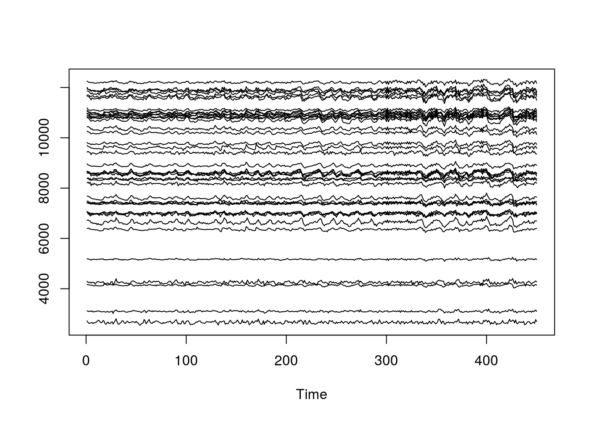
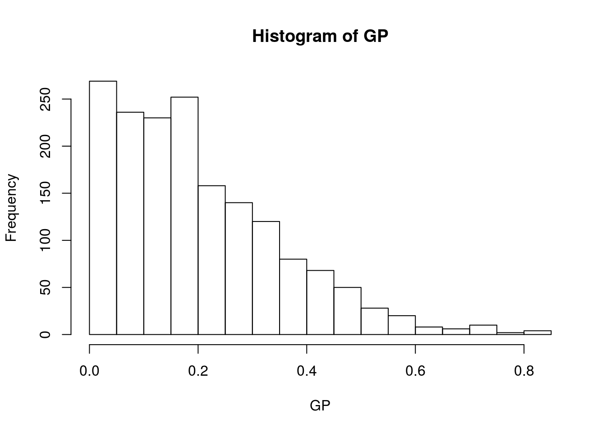
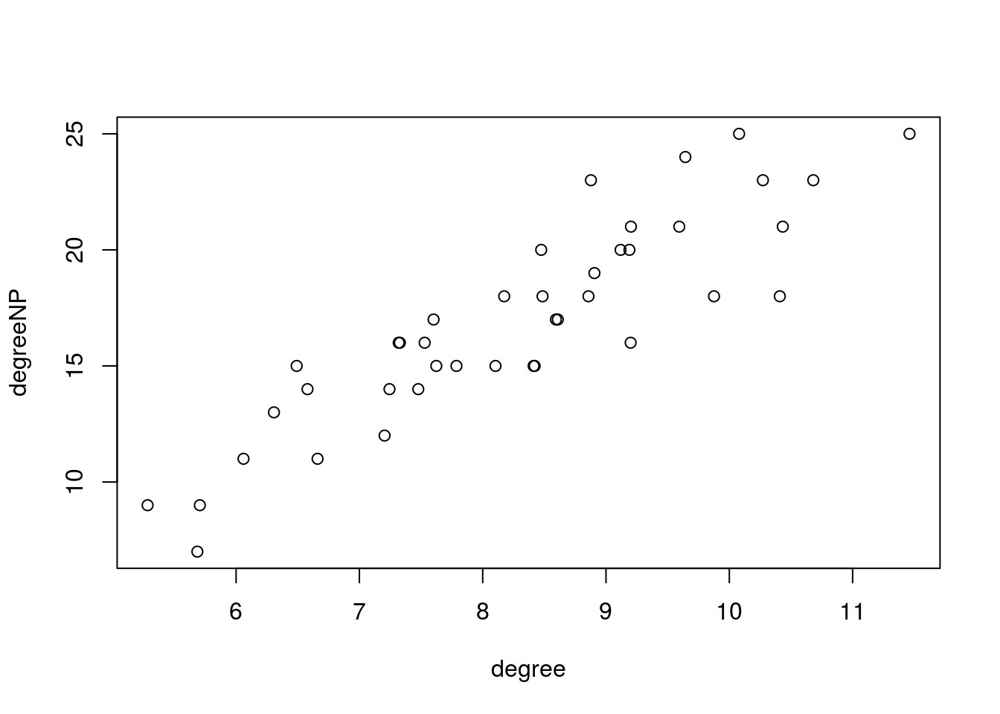

Nesta aula, aplicaremos os conceitos de conectividade funcional entre regiões de interesse (ROI to ROI).
Para isso, tomaremos um conjunto de regiões (ROIS), que no caso podem ser mapas já existentes ou criadas de acordo com a necessidade do estudo. A partir das correlações dos sinais BOLD médio dessas regiões podemos inferir se as mesmas estão ao não correlacionadas. Para a realização deste tipo de análise devemos seguir os seguintes passos (NOTAS DE AULA DA CÂNDIDA BARRETO):
#Carregar a biblioteca
require(AnalyzeFMRI)## Carregando pacotes exigidos: AnalyzeFMRI## Carregando pacotes exigidos: R.matlab## R.matlab v3.6.1 (2016-10-19) successfully loaded. See ?R.matlab for help.##
## Attaching package: 'R.matlab'## The following objects are masked from 'package:base':
##
## getOption, isOpen## Carregando pacotes exigidos: fastICA## Carregando pacotes exigidos: tcltk## Carregando pacotes exigidos: tkrplot#Leitura do arquivo de Resting-state fMRI pre-processada
fmri = f.read.volume("RESTING.img")
#Leitura do Atlas com as ROIs
atlas = f.read.volume("xbrodmann.img")
#Checar dimensoes das imagens
dim(fmri)## [1] 45 54 45 450dim(atlas)## [1] 181 217 181 1Veja que as dimensões são diferentes (o atlas possui voxels isotrópicos em 1mm e o dado de fmri em 4mm): o atlas possui quatro vezes mais dados que o fmri. Então precisaremos antes de tudo, fazer uma subamostragem da imagem grande para a menor, com razão 4 para 1 dos voxels do atlas.
Primeiro, identificando as dimensões:
XMAX = dim(fmri)[1]
YMAX = dim(fmri)[2]
ZMAX = dim(fmri)[3]
TMAX = dim(fmri)[4]Fazendo uma repetição do dado e o devido ajuste para centralizar na posição \((4x-2)\):
atlas4mm = array(0, c(XMAX, YMAX, ZMAX, 1))
for(xi in 1:XMAX){
for(yi in 1:YMAX){
for(zi in 1:ZMAX){
atlas4mm[xi, yi, zi, 1] = atlas[4*xi-2, 4*yi-2, 4*zi-2, 1]
}}}#fecha o forAgora, pode-se ver que o atlas e o fmri possuem as mesmas dimensões.
Salvando o atlas subamostrado:
#Salva o atlas subamostrado espacialmente
f.write.analyze(atlas4mm,"atlas4mm",
pixdim=c(4,4,4),
originator=c(23.5,32.5,19,1,1))Pretendemos ver o sinal BOLD representativo na região/área:
Identificando o número de regiões (saber quantas ROIS teremos e então construirmos a nossa matriz de #conectividade)
#Extrair o sinal BOLD representativo de cada regiao de interesse ROI
NOMESroi = names(table(atlas4mm))
#de 2 em diante para eliminar AR
NOMESroi = NOMESroi[2:length(NOMESroi)]
#Numeros de ROIs
Nroi = length(NOMESroi)Objetivo é ver a conectividade de cada ROI em cada nó no cérebro. Primeiro definimos uma matriz nula para armazenar o sinal de saída com número de linhas igual ao número de pontos no tempo, e número de colunas igual ao número de ROIS que quero analisar.
Na sequência, calculamos o sinal BOLD medio de cada ROI para cada ponto no tempo (IX contém os voxeis da ROI).
BOLD = matrix(0, TMAX, Nroi)
for(roi in 1:Nroi){
#localiza os voxels com o label/nome respectivo da roi de interesse
IX = which(atlas4mm == NOMESroi[roi])
#Extrai o sinal BOLD medio da ROI
for(ti in 1:TMAX){
BOLD[ti, roi] = mean(fmri[,,,ti][IX])
}
}
ts.plot(BOLD)
Para lidar com movimento, poderíamos fazer diversos tratamentos que não fizemos aqui faremos apenas a eliminação do sinal médio comum a todos que atrapalha, tirando o sinal médio de tudo (sinal global) e ficar com os resíduos usando GLM:
# Global-signal-regression - GSR
BOLD2 = BOLD
GS = rowMeans(BOLD)
for(roi in 1:Nroi){
BOLD2[, roi] = lm(BOLD[, roi]~GS)$res
}Regress-out o GS (reduz a influência de componentes sistemáticas, i e, fisiológicas). Faz a regressão linear considerando o sinal BOLD de cada região como variável resposta e o GS como preditora e guarda os resíduos.
O resultado de BOLD é uma matriz contendo as medias dos sinais de cada ROI ao #longo do tempo. Identificando a matriz de correlação de todos com todos. Usamos a função COR, criando uma matriz de conectividade:
# Análise de conectividade funcional ROI-to-ROI
COR = cor(BOLD2) #matriz de correlacaoOlhando um trecho, é possível ver as correlações, onde corr de um com ele mesmo resulta em 1:
COR[1:5, 1:5]## [,1] [,2] [,3] [,4] [,5]
## [1,] 1.0000000 0.58954468 0.4458445 0.25629036 0.22104731
## [2,] 0.5895447 1.00000000 0.6492590 0.32984228 0.01978718
## [3,] 0.4458445 0.64925899 1.0000000 0.80351790 -0.14624426
## [4,] 0.2562904 0.32984228 0.8035179 1.00000000 0.04417543
## [5,] 0.2210473 0.01978718 -0.1462443 0.04417543 1.00000000Precisamos analisar a matriz de conectividade funcional. Para a Matriz de adjacência do grafo, primeiramente, devemos lidar com o sinal negativo (+/-) dos elementos desta matriz de correlações.
A abordagem mais comum, é simplesmente tomar os valores em módulo (ignorar o sinal e pegar o valor absoluto). Ou ainda, também é frequente zerar esses valores negativos, deixando somente os positivos (existem outras formas de lidar com o sinal que também poderiam ser exploradas).
GRAFO NÃO DIRECIONADO (IDA E VOLTA IGUAL) E GRAFO PONDERADO (COM PESOS NAS ARESTAS/ WEIGHTED GRAPH).
Com a matriz de adjacência identificamos quem é mais hub e menos hub (importância no grafo):
#Grafos ponderados - Matriz de adjacencia do grafo
#Undirected weighted graph
GP = abs(COR)
#zera a diagonal principal:
diag(GP) = 0Visualizando:
GP[1:5, 1:5]## [,1] [,2] [,3] [,4] [,5]
## [1,] 0.0000000 0.58954468 0.4458445 0.25629036 0.22104731
## [2,] 0.5895447 0.00000000 0.6492590 0.32984228 0.01978718
## [3,] 0.4458445 0.64925899 0.0000000 0.80351790 0.14624426
## [4,] 0.2562904 0.32984228 0.8035179 0.00000000 0.04417543
## [5,] 0.2210473 0.01978718 0.1462443 0.04417543 0.00000000Como métrica para comparar as redes, foi usado o grau da rede, que é o número médio de conexões existentes.
O número máximo de conexões é determinado então a partir da soma dos elementos da linha da matriz de conexões e subtraindo o 1 das correlações da diagonal principal (dados de ROI com ele mesmo).
Para ver medidas de centralidade (soma de todas as conexões):
Métrica para comparar as redes - Foi usado aqui o grau da rede, que é o número médio de conexões.
# Calculo do degree/grau de cada ROI
degree = colSums(GP)
# (poderia ser a media tb)
degree## [1] 8.877748 7.328348 8.905946 8.174263 10.272278 6.491391 11.461344
## [8] 10.433433 10.409477 7.244085 10.680901 8.485345 8.609147 9.199811
## [15] 9.118235 8.857685 8.421214 5.706259 7.529261 7.477560 5.685950
## [22] 7.601596 7.204188 6.060172 9.643387 7.787061 5.282564 9.593935
## [29] 8.103715 8.474427 10.079470 6.307135 6.660861 7.623800 9.875775
## [36] 9.189755 8.593940 9.202202 8.412814 7.318565 6.579100Para criar um mapa de correlação vamos ranquear os degrees para termos uma ordem de organização. Podemos visualizar o mais importante, e normaliza-lo 0-1:
degreeNorm = rank(degree)/Nroi
hist(GP)
Numa análise arbitrária, com muitas conexões, temos muitos ruídos. Tornando de forma binária a partir de um limiar facilita a leitura.
Grafo não ponderado - Matriz de adjacência: Nas medidas de centralidade, temos soma das conexões. Como temos muitas regiões, essas somas ficam grandes, aumentando ruído. Por isso, transformamos o grafo em binário.
#Grafo nao-ponderado - Binários - Matriz de adjacencia
#Undirected unweighted graph
LIMIAR = 0.2
GNP = GP
GNP[which(GP <= LIMIAR)] = 0
GNP[which(GP > LIMIAR)] = 1Determinando um limiar para essa ponderação:
#Grafos Nao-ponderados (binarios)
LIMIAR = 0.2
GNP = GP
GNP[which(GP <= LIMIAR)] = 0
GNP[which(GP > LIMIAR)] = 1
#Calculo do Degree em cada ROI
degreeNP = colSums(GNP)
#Normaliza para 0 e 1
degreeNormNP = rank(degree)/Nroi
plot(degree, degreeNP)
cor(degree, degreeNP)## [1] 0.8921288Definindo um mapa de centralidade de grau:
#Construir um mapa de centralidade
MAPA = array(0, c(XMAX, YMAX, ZMAX, 1))
for(roi in 1:Nroi){
#Identificar os voxels com o label respectivo da ROI
IX = which(atlas4mm == NOMESroi[roi])
MAPA[,,,1][IX] = degreeNorm[roi]
}Salvando o mapa de correlação para gerar uma imagem de visualização para verificar a intensidade da correlação:
#Salva os mapas em arquivos no formato Analyze (IMG/HDR)
f.write.analyze(MAPA,"MAPAROItoROI",
pixdim = c(4, 4, 4),
originator = c(23.5, 32.5, 19, 1, 1))Com esse mapa, no MRICro podemos visualizar quem tem mais ou menos relevância, ou seja as regiões com correlações mais intensas.